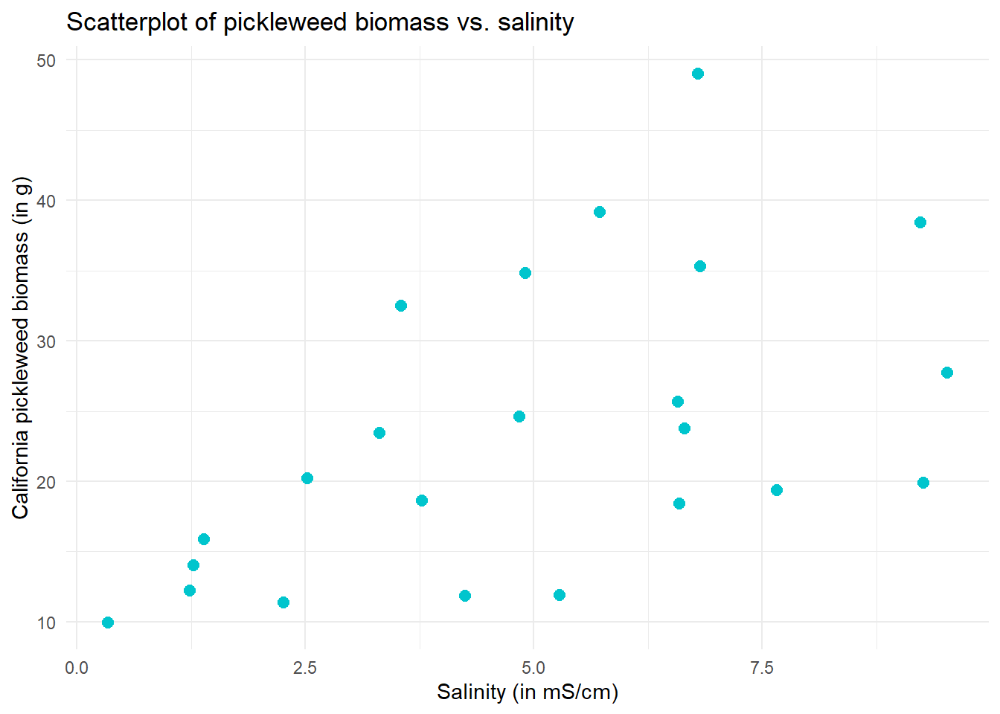

# load libraries
library(tidyverse)
library(here)
library(janitor)
library(readxl)
# read data
salinity <- read_csv(here("data", "salinity-pickleweed.csv"))
salinity_clean <- salinity |>
clean_names() |>
rename(salinity_ms_cm = salinity_m_s_cm)
personal <- read_csv(here("data", "envs193ds-personal-data.csv"))ENVS-193DS_homework-03
Part 1. Set up tasks
Part 2. Problems
Problem 1. Slough soil salinity
a. An appropriate test
There are two appropriate ways to test the strength of the relationship between salinity and California pickleweed biomass: Pearson’s correlation test and a Spearman rank correlation test. The Pearson’s correlation test is a parametric test (uses precise data values, not ranks), and it might be appropriate because our variables are continuous and we can check for normality. On the other hand, the Spearman rank correlation is a nonparametric test (uses ranks, not precise data values), and it might be appropriate because we can check for a monotonic relationship between our variables.
b. Create a visualization
ggplot(data = salinity_clean, # use cleaned salinity data
aes(x = salinity_ms_cm, # set salinity to x-axis
y = pickleweed)) + # set biomass to y-axis
geom_point(color = "turquoise3") + # change point colors
labs(x = "Salinity (in mS/cm)", # add labels to axes and add title
y = "California pickleweed biomass (in g)",
title = "Scatterplot of pickleweed biomass vs. salinity") +
theme_minimal() # change theme
c. Check your assumptions and run your test
Checking assumptions
We want to run a Pearson’s correlation test, so we will check for continuity and normality in our variables.
We already know that salinity and biomass are both continuous variables because they can take on any values in a given range. Our first assumption is correct!
Now we will check for normality.
ggplot(data = salinity_clean, # used cleaned salinity data
aes(sample = salinity_ms_cm)) + # set salinity measurements against theoretical values
geom_qq_line(color = "red") + # add a reference line, make it red
geom_qq() + # add the rest of the qq plot
labs(title = "QQ plot of salinity variable data") + # add a title
theme_minimal() # change the theme
Our salinity data appears to be relatively normal based on how our points (observations) roughly follow the red line (perfect normal distribution). Let’s check our pickleweed biomass next.
ggplot(data = salinity_clean, # use cleaned salinity data
aes(sample = pickleweed)) + # set biomass data against theoretical values
geom_qq_line(color = "red") + # add a reference line, make it red
geom_qq() + # add the rest of the qq plot
labs(title = "QQ plot of pickleweed biomass variable data") + # add a title
theme_minimal() # change the theme
Our pickleweed biomass observations appear to also be relatively normal because these points similarly appear to roughly follow the line.
Since our two variables both appear to be relatively normal, and they are both continuous, we can continue with the test!
Running the test
cor.test(x = salinity_clean$salinity_ms_cm, # first variable
y = salinity_clean$pickleweed, # second variable
method = "pearson") # select type of correlation test, Pearson in this case
Pearson's product-moment correlation
data: salinity_clean$salinity_ms_cm and salinity_clean$pickleweed
t = 2.8979, df = 21, p-value = 0.008605
alternative hypothesis: true correlation is not equal to 0
95 percent confidence interval:
0.1568265 0.7757682
sample estimates:
cor
0.5344778 We can see that we have found a moderate relationship between soil salinity and pickleweed biomass (Pearson’s r = 0.53, t(21) = 2.90, p = 0.009, \(\alpha\) = 0.05).